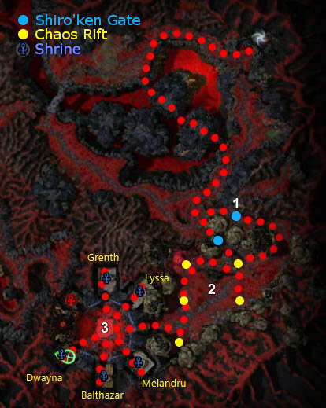

Elite: Magehunter's Smash
M16
Gate of Madness
◉ Mission Map

Click to enlarge · Local cache · Wiki
Summary (click to expand)
You and Kormir have traveled to the Gate of Madness , seeking the Temple of the Six Gods , and in it, a way to beseech the Gods for assistance in defeating Abaddon . Unfortunately, the way is heavily guarded by Torment creatures and Margonites , as well as some old enemies from Prophecies and Factions .
Region: Realm of Torment · Mission: 16 of 20 · Type: Cooperative
✓ Objectives
- Travel to the Temple of the Six Gods.
- Close the torment rifts by slaying the portal wraiths. [5...0] of 5 rifts remain open.
- Activate the shrines to the Five Gods to aid you in battle.
- Destroy the Undead Lich and Shiro Tagachi.
- *Bonus* Rally the god avatars.
- You have rallied [0...5] of 5 god avatars.
→ Walkthrough
The mission can be divided into three parts plus the bonus:
- Crossing the ravine.
- Closing the Chaos Rifts.
- Defeating Shiro and the Undead Lich.
- Capping the shrines (for the bonus).
While in this area, your party members suffers from Depths of Madness environment effect (causes -15% healing). Non-party members (summoned creatures, pets, summoning stone NPCs) are not affected.
Crossing the ravine
Cross the ravine by using either of two routes. The shortest route is a bridge across the chasm occupied by Titans, and the other option is to walk around the chasm along the path occupied by the Margonites (including the boss Champion Puran) and the Torment creatures.
You will then arrive at a gate (point 1 on the map) where Shiro will summon four groups of Shiro'kens. You can avoid two late groups by running through the open gate immediately. Alternatively, retrace your steps to only engage single groups, or simply run back to the base of the hill, watch the Shiro'ken run atop and then sweep through the gate at the bottom of the hill used by the Shiro'ken.
Closing the Chaos Rifts
After the Shiro'ken, the Undead Lich will open five Chaos Rifts, which will spawn a variety of enemies (Prophecies Titans, Margonites and Torment Claws) continuously as long as they remain open. These portals are guarded by three Portal Wraiths each, which must be defeated to close them. The Wraiths themselves are not servants of Abaddon and so the Lightbringer title and skills are ineffective.
Progressively destroy the rifts one by one, pulling roving enemies to the recently closed portals. Foes only respawn if their entire group is killed, so consider leaving one alive before defeating the wraiths of the portal (Titans other than the continually spawning group do not respawn). There is also an Armageddon Lord at the northern rift.
After all portals are closed, the Temple of the Six Gods's gate opens. This instance is often used to take a break. Margonite groups, Shiro and the Undead Lich are awaiting inside the temple.
If you are completing the mission with heroes and henchmen, now is the time to read and carry out the bonus objectives.
Defeating Shiro and the Undead Lich
Most groups encounter some difficulty defeating one or both of these foes. The most important step is to pull them apart and it is almost always easier to have Shiro chase you. Set up your party just outside of the temple gate; if you have them, you can use spirits and/or minions and/or tanks to block each boss from reaching your backline.
- Shiro
Initially, Shiro is not difficult; he starts by dishing out manageable amounts of damage and seems to lose health quickly enough. However, once he is reduced to 25% of his health, he will use Impossible Odds, which can do large amounts of damage, remove any hexes, and transfer conditions to any opponent he hits. There are several strategies that work well:
- Use Pain Inverter at this point
- Use a tank to draw aggro and keep it protected using wards, protection spells, and/or maintained enchantments. Keep your backline away from him and, as long as you have enough damage, he will not survive long enough to do any significant harm.
- As suggested above, use a spirit wall and/or minions to prevent Shiro from reaching most of the party.
- Bring stance-removal skills to cancel Shiro's Battle Scars and bring interrupts to prevent Impossible Odds.
- The Undead Lich
The two biggest threats from the lich are his high damage output and his ability to turn enchantments against the enchanted. You can counter him easily using party-wide heal, healing spirits, and/or non-enchantment protections (such as stances or non-typed skills).
★ Bonus
To complete the bonus, you have to rally the five deity shrines in the temple before killing Shiro and the Lich (killing them would end the mission early, eliminating any chances at the bonus). You capture them the same way as you have seen in other missions (e.g. Grand Court of Sebelkeh): as each party member stands near the shrine, the ownership transfers to the party; the rate goes up with each new character present and goes down with each foe. You can capture the shrines in any order.
Each shrine is devoted to a particular god and is defended by 2-4 corresponding Margonites (e.g. Mesmers at Lyssa's shrine). For each shrine you have captured, the shrine will grant the party with all the blessings of that god (the generic blessings that can be applied to all professions, and also blessings for your primary profession). If you lose a shrine, you lose the blessings but will still get credit for the bonus; you do not have to retain control to obtain the Master's level reward. For each shrine that is captured the first time, your party gains a 2% Morale Boost.
- Capturing via exploit
The easiest way to get the bonus is to exploit a hole in the game mechanics, using heroes and henchmen to capture the shrines. You must do this after closing the rifts, but before entering the corridor to the shrine area. The guards of each shrine will not attack your heroes and henchmen unless you have entered compass range of the shrine (i.e. don't go too close to the portals near the temple when capturing them).
Open the mission map (U), and zoom in towards the shrines, which will be marked on the map. Flag all of your heroes and henchmen to a shrine, and then wait for the color of the icon to change from red to grey to blue. When the icon changes to blue, your party will receive the god bonus, and the objectives will update. Repeat this for the other four shrines on the map (not the Abaddon shrine). To keep them from losing their way, consider flagging your heroes back to the center of the temple after capturing each shrine. If you have trouble with flagging heroes, consider sacrificing yourself with vampiric weapons or skills, and then clicking on a hero/henchman's name to view from their perspective and then move the flag appropriately.
Another exploit is to take advantage of Shiro's AI: he has a preference to pick low health targets (e.g. spirits), so leave them at the back of either shrine and near the column. This structure prevents Shiro from returning to the center of the temple. Since there are a total of five rooms to cap, you have four chances to get him out of the way while you complete the bonus.
- Capturing without exploit
If you are in a group primarily composed of players (or if you do not wish to use the exploit), take on the bosses one at a time; which you choose is a matter of taste:
- The Undead Lich deals heavy damage with his wand that can be painful to a moving party. However, he also walks very slowly, and breaks off pursuit more quickly. Running in and out of his aggro radius or using walls/captured shrines to block him can keep him busy without the party enduring his damage output.
- Shiro is easier and safer to pull: he deals relatively minor damage until his health runs low and he is a dogged pursuer with a very large aggro radius.
Whichever you target first, as you capture each shrine, kill its attending guards (so that they do not pester you during the boss battles and so you maintain the bonus from holding the shrines).
◆ Hard Mode
No dedicated Hard Mode section on the wiki — expect tougher foes and adjusted mechanics. See walkthrough notes.
☠ Bosses & Elites
Elite: Invoke Lightning
✦ Tips & Notes
Skill recommendations
- Generally useful
- The Lightbringer title helps immensely against nearly all the foes in the mission. Also consider Lightbringer's Gaze and Lightbringer Signet, as appropriate substitutes for other interrupt or energy/adrenaline management skills.
- Punishment hexes are always useful and especially against Shiro, e.g. Pain Inverter, Empathy, Price of Failure, Insidious Parasite, Spiteful Spirit, and Spoil Victor.
- Interrupts work well against the Undead Lich and are generally useful throughout.
- Bring resurrection skills:
- Rebirth or Unyielding Aura for recovering from near-wipes.
- "We Shall Return!" for party-wide recovery.
- Sunspear Rebirth Signet (or Resurrection Signet for heroes): there are plenty of morale boosts that will recharge these fast-activating skills.
- Enchantment heavy builds are vulnerable to one or more foes from each group and especially to the Undead Lich's Hunger of the Lich
- Specifically useful against Shiro
- Stance removing skills, such as Wild Blow or Wild Throw, to end Battle Scars.
- Blocking skills, especially Critical Defenses (which can be maintained indefinitely when tanking Shiro).
- Conditions can be dangerous against Shiro, since he can spread them using Impossible Odds.
- Blind is great when bringing spellcaster-heavy parties, e.g. from Blinding Flash, Eruption, Ebon Dust Aura, Shadowsong, or Sneak Attack.
- Deep Wound can be very useful if managed carefully.
- Shadowsong plus Displacement can render Shiro harmless; he will either miss (due to blindness) or get blocked (preventing him from removing blindness).
- Shiro cannot be knocked down, unless the knock down lasts at least three seconds.
- Shield of Judgment will activate continually.
- Earthbind can cause him to be vulnerable to knock down.
Notes
- Kormir follows the party leader during this mission. She doesn't use any skills unless damaged, and never attacks. However, she can only be harmed by area of effect skills because foes can't directly target her.
- Torment creatures will popup in some points.
- After completing this mission, your party will be taken to Abaddon's Gate.
- Completion of this mission will fill in page #16 in the Night Falls storybook.
- The respawn mechanic of the Titan Abominations from the portals seems to be tied to their aggro. Once they are aggroed, it takes roughly 15 seconds for the next two to spawn at the portal.